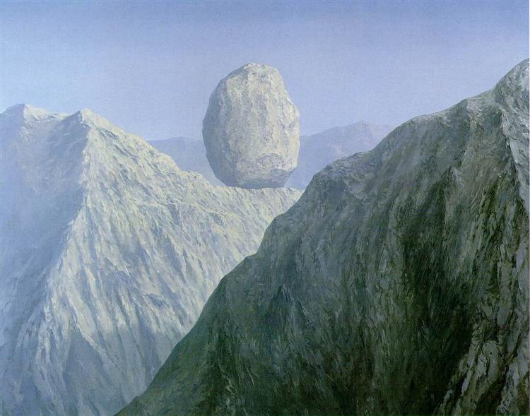

I don't follow a lot of artists, but if I had to pick a favorite, it would be René Magritte.
He makes a lot of surreal paintings that make you ask a lot of questions wondering how this would be possible,
"The Glass Key" is a great example of this, how did this massive object get there? Why is this called the glass key? Why was this made?
I love the absurdity of it all, that's probably what makes him my favorite.
Go Back to home